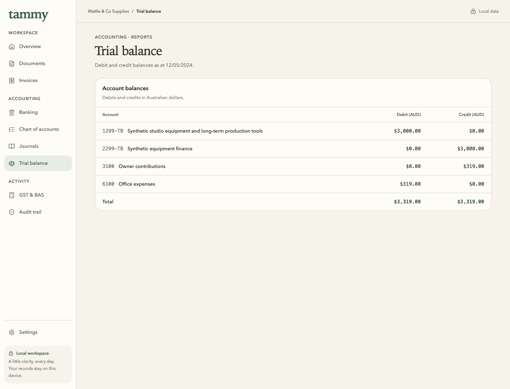
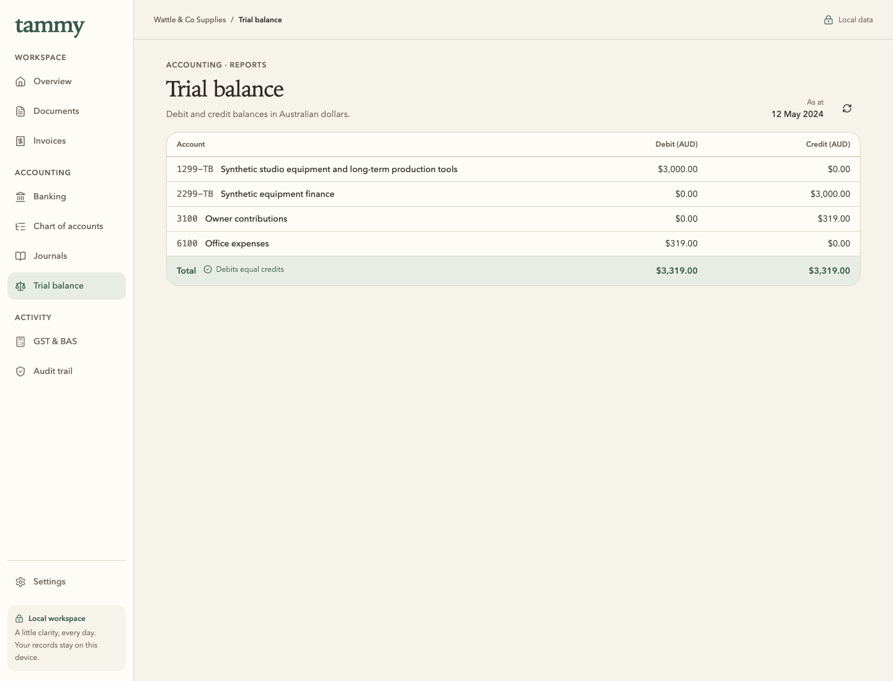
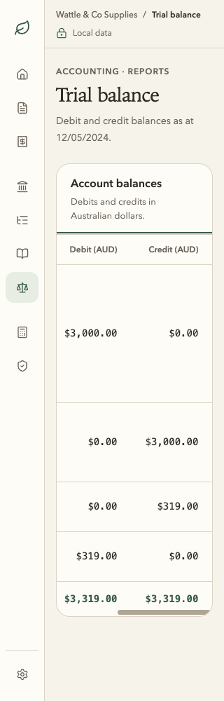
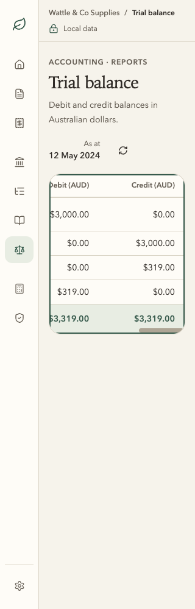

Trial balance · Soft Precision
Real isolated synthetic accounting data. Before and after share 1440 × 1100, the same four account balances, as-of date 12 May 2024 and exact debit/credit totals AUD 3,319.00. The generated reference remains separate; visual similarity does not qualify accounting, MAS, Windows 11 or ATO use.
Approved board 09

Before · real app


After · real app


320px · before keyboard


320px · after keyboard


Actions, checks and limits · Before provenance · After provenance · Finite remaining inventory